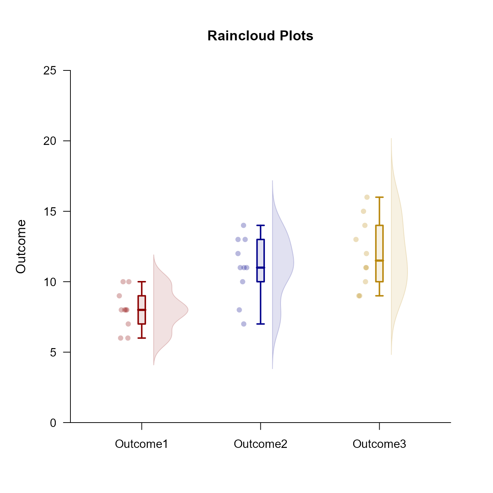

This page examines a single-factor within-subjects (repeated measures) design using raw data input, focusing on exploratory data analyses.
Preliminary Tasks
Summarizing Data
Obtaining frequency distributions and data plots are often a first step in exploring data.
Describe the frequency distributions.
(RepeatedData) |> describeFrequencies()$Outcome1
Frequencies for the Data
Freq Perc CumFreq CumPerc
6 2.000 20.000 2.000 20.000
7 1.000 10.000 3.000 30.000
8 4.000 40.000 7.000 70.000
9 1.000 10.000 8.000 80.000
10 2.000 20.000 10.000 100.000
$Outcome2
Frequencies for the Data
Freq Perc CumFreq CumPerc
7 1.000 10.000 1.000 10.000
8 1.000 10.000 2.000 20.000
10 1.000 10.000 3.000 30.000
11 3.000 30.000 6.000 60.000
12 1.000 10.000 7.000 70.000
13 2.000 20.000 9.000 90.000
14 1.000 10.000 10.000 100.000
$Outcome3
Frequencies for the Data
Freq Perc CumFreq CumPerc
9 2.000 20.000 2.000 20.000
10 1.000 10.000 3.000 30.000
11 2.000 20.000 5.000 50.000
12 1.000 10.000 6.000 60.000
13 1.000 10.000 7.000 70.000
14 1.000 10.000 8.000 80.000
15 1.000 10.000 9.000 90.000
16 1.000 10.000 10.000 100.000Plot the frequencies as data points. Data points obtained from the same individuals are connected.
(RepeatedData) |> plotData(offset = 0, method = "swarm", connect = TRUE)Building Layered Plots
To make the plots more informative, it is often desirable to layer multiple elements on the same plot.
Using Separate Calls
The typical way to build a plot is to use separate calls for each plotting elements (e.g., data, boxplots) and using the “add” argument to put them on the same plot.
This can be simplified by using an “add” version of the function call instead of using the longer “add” argument for the function call. Note that additional arguments can be used to alter the plots.
Using Passthrough Capabilities
Rather than separate lines for function calls, all plotting elements have passthrough capabilities that allow the them to be placed on the same line. Note that additional arguments can still be used.
As a second example, plot the frequency distributions as histograms and add the summary statistics. The bars represent standard deviations, with dotted lines as the default but solid lines representing the sides with more skew.
(RepeatedData) |> plotFrequencies(main = "Frequencies and Summary Statistics for the Data") |> addMeans()Common Layered Plots
Some forms of exploratory plots are very common (e.g., violin plots, bean plots, and raincloud plots). Though they could each be built using the methods above, specific functions for these are built into EASI.
Violin Plots
Build violin plots using multiple basic plot calls.
(RepeatedData) |> plotBoxes(values = FALSE, main = "Violin Plots")
(RepeatedData) |> plotDensity(add = TRUE, offset = 0, type = "full")Obtain violin plots using one call (and enhance the plot with color).
(RepeatedData) |> plotViolins(col = c("darkred", "darkblue", "darkgoldenrod"))
Bean Plots
Build bean plots using multiple basic plot calls.
(RepeatedData) |> plotDensity(type = "full", offset = 0, main = "Bean Plots")
(RepeatedData) |> plotData(add = TRUE, offset = 0, pch = 95, method = "overplot")
Obtain bean plots using one call (and enhance the plot with color).
(RepeatedData) |> plotBeans(col = c("darkred", "darkblue", "darkgoldenrod"))Raincloud Plots
Build raincloud plots using multiple basic plot calls.
(RepeatedData) |> plotBoxes(values = FALSE, main = "Raincloud Plots")
(RepeatedData) |> plotDensity(add = TRUE, offset = .1)
(RepeatedData) |> plotData(add = TRUE, method = "jitter", offset = -.15)Obtain raincloud plots using one call (and enhance the plot with color).
(RepeatedData) |> plotRainclouds(col = c("darkred", "darkblue", "darkgoldenrod"))